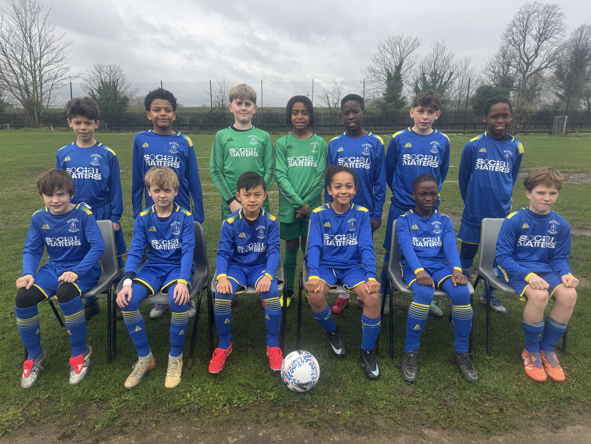

Representing our borough.
The boys’ district team represents Hackney in schools football. Hackney has won the Inner London Kay Trophy eight times, most recently in 2024–25, and the Lester Finch Trophy five times.
The team also won the Southern Counties Cup in 1984 and 2024. Many boys who have represented the district have gone on to receive county honours.
Joining the team
Schools and families can contact HSAA for information about selection and opportunities to represent Hackney.
Safeguarding
District coaches with both teams hold updated FA DBS certificates and have completed the necessary FA child safeguarding training.